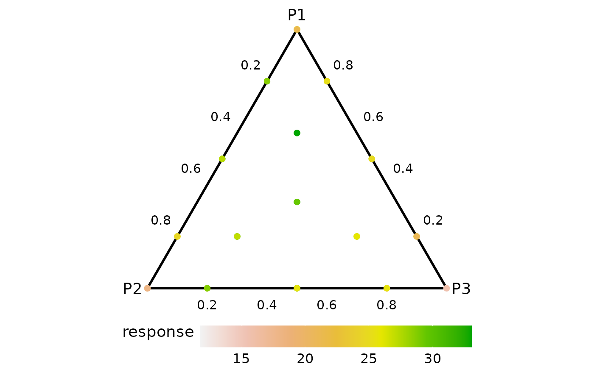
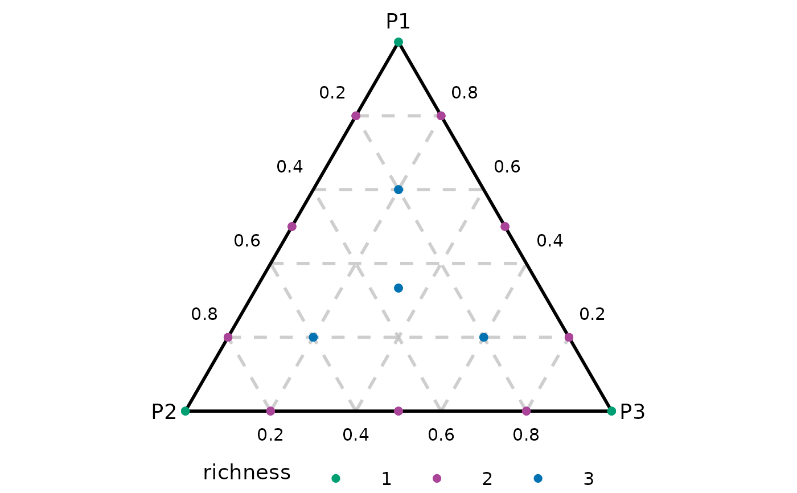
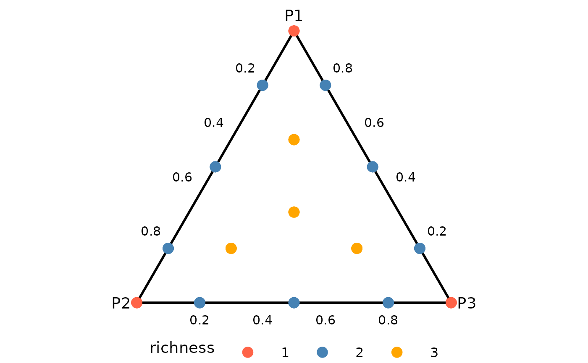
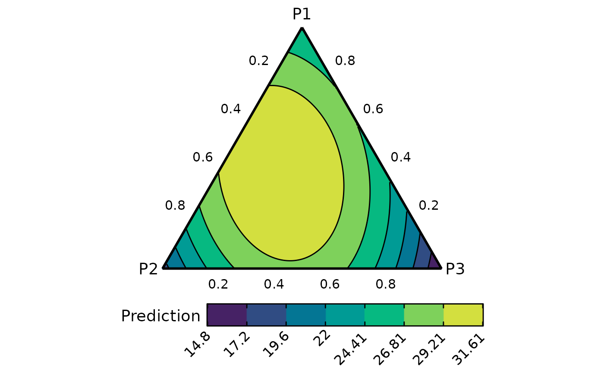
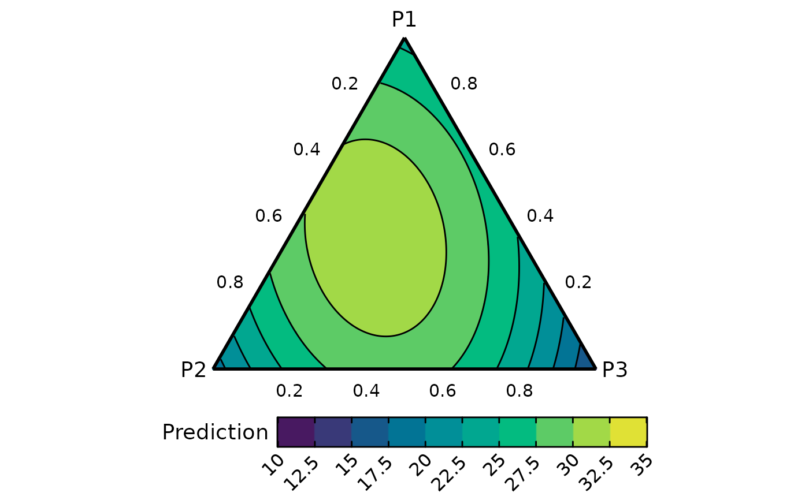
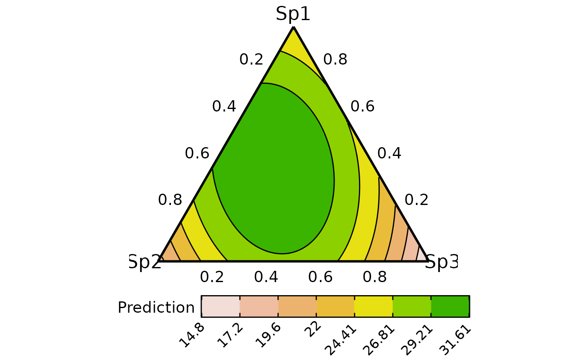
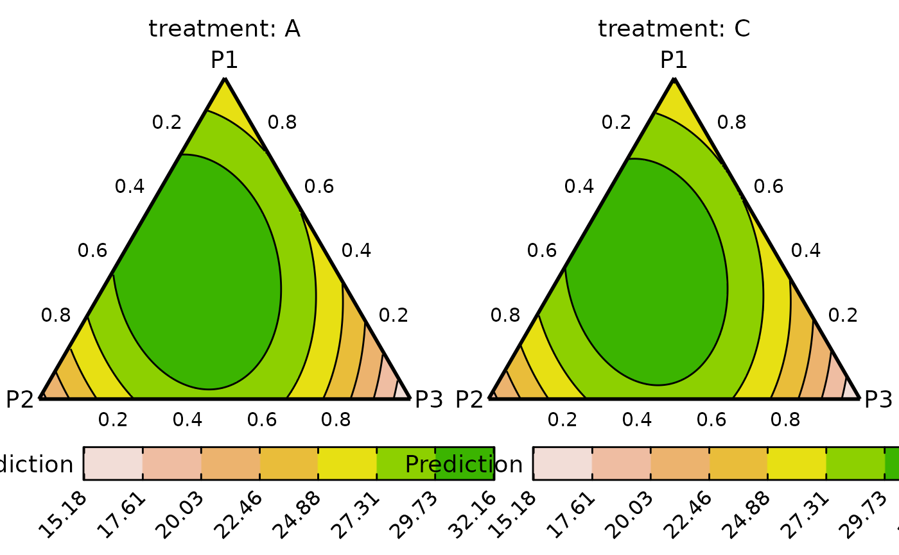

Ternary diagrams
ternary_plot.RdCreate a ternary diagram showing the a scatter-plot of points across the surface
or a contour map showing the change in a continuous variable across the
ternary surface. The ternary surface can be created using the
ternary_data function.
Usage
ternary_plot(
data,
prop = NULL,
col_var = ".Pred",
show = c("contours", "points"),
tern_labels = c("P1", "P2", "P3"),
show_axis_labels = TRUE,
show_axis_guides = FALSE,
axis_label_size = 4,
vertex_label_size = 5,
points_size = 2,
nlevels = 7,
colours = NULL,
lower_lim = NULL,
upper_lim = NULL,
contour_text = FALSE,
nrow = 0,
ncol = 0
)Arguments
- data
A data-frame consisting of the x-y plane projection of the 2-d simplex. This data could be the output of the `ternary_data` function, and contain the predicted response at each point along the simplex to show the variation in response as a contour map.
- prop
A character vector specifying the columns names of compositional variables. By default, the function will try to automatically interpret these values from the data.
- col_var
The column name containing the variable to be used for colouring the contours or points. The default is ".Pred".
- show
A character string indicating whether to show data-points or contours on the ternary. The default is to show "contours".
- tern_labels
A character vector containing the labels of the vertices of the ternary. The default is the column names of the first three columns of the data, with the first column corresponding to the top vertex, second column corresponding to the left vertex and the third column corresponding to the right vertex of the ternary.
- show_axis_labels
A boolean value indicating whether to show axis labels along the edges of the ternary. The default is
TRUE.- show_axis_guides
A boolean value indicating whether to show axis guides within the interior of the ternary. The default is
FALSE.- axis_label_size
A numeric value to adjust the size of the axis labels in the ternary plot. The default size is 4.
- vertex_label_size
A numeric value to adjust the size of the vertex labels in the ternary plot. The default size is 5.
- points_size
If showing points, then a numeric value specifying the size of the points.
- nlevels
The number of levels to show on the contour map.
- colours
A character vector or function specifying the colours for the contour map or points. The number of colours should be same as `nlevels` if (`show = "contours"`).
The default colours scheme is theterrain.colors()for continuous variables and an extended version of the Okabe-Ito colour scale for categorical variables.- lower_lim
A number to set a custom lower limit for the contour (if `show = "contours"`). The default is minimum of the prediction.
- upper_lim
A number to set a custom upper limit for the contour (if `show = "contours"`). The default is maximum of the prediction.
- contour_text
A boolean value indicating whether to include labels on the contour lines showing their values (if `show = "contours"`). The default is
FALSE.- nrow
Number of rows in which to arrange the final plot (when `add_var` is specified).
- ncol
Number of columns in which to arrange the final plot (when `add_var` is specified).
Value
A ggmultiplot (ggplot if single plot is returned) class object or data-frame (if `plot = FALSE`)
Examples
library(DImodels)
library(dplyr)
library(ggplot2)
## Load data
data(sim0)
### Show raw data as points in ternary
## `ternary_plot` shows contours by default, use `show = "points"` to show
## points across the ternary
ternary_plot(data = sim0, prop = c("p1", "p2", "p3"), show = "points")
#> ✔ Created plot.
## The points can also be coloured using an additional variable by
## specifying it in `col_var`
ternary_plot(data = sim0, prop = c("p1", "p2", "p3"),
col_var = "response", show = "points")
#> ✔ Created plot.

## Categorical variables can also be shown
## Also show axis guides using `show_axis_guides`
sim0$richness <- as.factor(sim0$richness)
ternary_plot(data = sim0, prop = c("p1", "p2", "p3"),
col_var = "richness", show = "points",
show_axis_guides = TRUE)
#> ✔ Created plot.

## Change colours by using `colours` argument
## and increase points size using `points_size`
ternary_plot(data = sim0, prop = c("p1", "p2", "p3"),
col_var = "richness", show = "points",
colours = c("tomato", "steelblue", "orange"),
points_size = 4)
#> ✔ Created plot.

### Show contours of response
## Fit model
mod <- lm(response ~ 0 + (p1 + p2 + p3)^2, data = sim0)
## Create a contour map of predicted response over the ternary surface
## Remember to specify prop with the same character values as the names
## of the variables in the model containing the prop.
plot_data <- ternary_data(resolution = 1, model = mod,
prop = c("p1", "p2", "p3"))
## Create a contour plot of response across the ternary space
ternary_plot(plot_data)
#> ✔ Created plot.
## Change colour scheme
cols <- hcl.colors(7) # because there are 7 contour levels by default
ternary_plot(plot_data, colours = cols)
#> ✔ Created plot.

# \donttest{
## Change number of contours using `nlevels`
## and set custom upper and lower limits for the scale
ternary_plot(plot_data, nlevels = 10, colours = hcl.colors(10),
lower_lim = 10, upper_lim = 35)
#> ✔ Created plot.

## Change ternary labels along with their font-size
ternary_plot(plot_data, tern_labels = c("Sp1", "Sp2", "Sp3"),
vertex_label_size = 6, axis_label_size = 5)
#> ✔ Created plot.

## Add additional variables and create a separate plot for each
sim0$treatment <- rep(c("A", "B", "C", "D"), each = 16)
new_mod <- update(mod, ~. + treatment, data = sim0)
tern_data <- ternary_data(resolution = 1, model = new_mod,
prop = c("p1", "p2", "p3"),
add_var = list("treatment" = c("A", "C")))
## Arrange plot in 2 columns
ternary_plot(data = tern_data, ncol = 2)
#> ✔ Created all plots.

# }